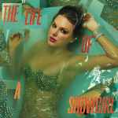

Primer Album: Taylor Swift

Taylor Swift (2006): Es el álbum debut de Taylor, con un sonido country juvenil y letras sobre el amor y la adolescencia. La canción “Tim McGraw” fue su primer sencillo y la hizo conocida en todo Estados Unidos.
Segundo Album: Fearless

Fearless (2008): Este disco consolidó su fama, combinando country y pop. Ganó varios premios Grammy y tiene canciones muy conocidas como “Love Story” y “You Belong With Me”.
Tercer Album: Speak Now

Speak Now (2010): Taylor escribió todas las canciones sola. El álbum mezcla historias personales y románticas con un sonido pop-country más maduro. Canciones destacadas: “Back to December” y “Enchanted”.
Cuarto Album: Red

Red (2012): Marca la transición al pop con temas sobre el desamor y la madurez. “We Are Never Ever Getting Back Together” y “All Too Well” son de las más recordadas.
Quinto Album: 1989

1989 (2014): Es su primer álbum completamente pop, con un sonido inspirado en los años 80. Incluye grandes hits como “Shake It Off” y “Blank Space”.
Sexto Album: Reputation

Reputation (2017): Muestra un lado más oscuro y fuerte de Taylor, con temas sobre fama, venganza y amor. Canciones populares: “Look What You Made Me Do” y “Delicate”.
Séptimo Album: Lover

Lover (2019): Es un regreso a un tono más colorido y romántico. El disco celebra el amor y la libertad. Entre las más conocidas están “Lover” y “The Man”.
Octavo Album: Folklore

Folklore (2020): Tiene un sonido más calmado e íntimo, con influencias del indie folk. Fue muy aclamado por la crítica. Canciones destacadas: “Cardigan” y “Exile”.
Noveno Album: Evermore

Evermore (2020): Es el disco hermano de “Folklore”, con un estilo similar pero un tono más nostálgico. Incluye temas como “Willow” y “Champagne Problems”.
Décimo Album: Midnights

Midnights (2022): Explora pensamientos nocturnos y emociones personales. Tiene un sonido pop moderno con canciones como “Anti-Hero” y “Lavender Haze”.
Undécimo Album: The Tortured Poets Department

The Tortured Poets Department (2024): Este álbum explora sonidos más experimentales y letras introspectivas sobre la vida y la creatividad. Combina distintos géneros para contar historias profundas y personales.
Duodécimo Album: The Life of a Showgirl
The Life of a Showgirl (2025): Un disco que celebra el espectáculo y la vida en el escenario. Mezcla pop, dance y elementos teatrales, mostrando un lado más divertido y enérgico de Taylor.